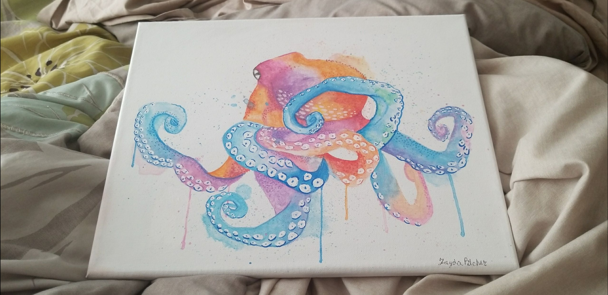
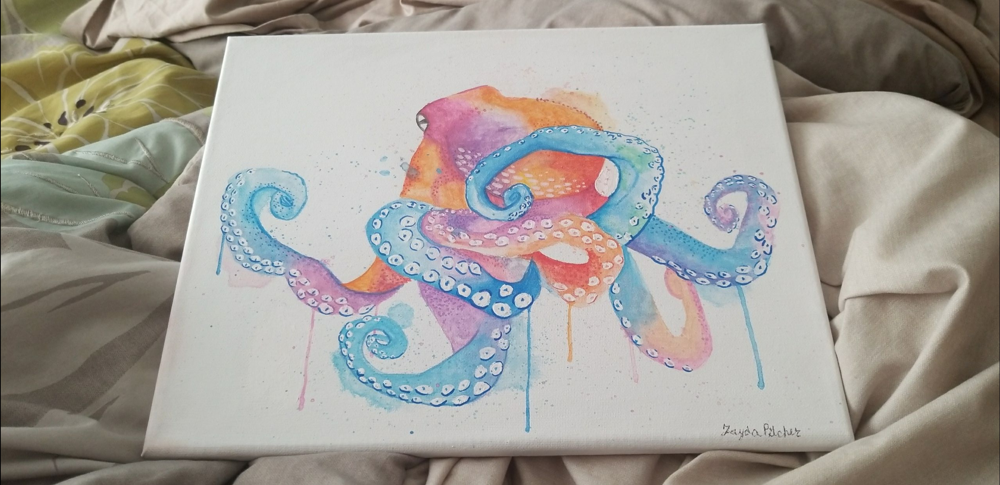

Zayda Pilcher
Zayda is a freelance artist who has been selling her artwork for a total of five years as of the year 2022. She is a first year Pre-Business student, aiming to graduate with a master's degree. Zayda wants to use her degree to open up her own art gallery. She would love to display her own art. She would also take joy in helping other local artists by displaying their art as well.
Here are some of the skills she has gained from working as a Freelance Artist. She ordered and maintained adequate supply of materials, supplies, and equipment. Established and maintained productive, professional working relationships to promote beneficial project results. Maintained and shared portfolios of artistic work to demonstrate styles, interests and abilities with potential customers. Contributed to the creative process through original ideas and inspiration. Created custom drawings and paintings using fine oils, acrylics and charcoal on high quality canvas. Researched drawings of characters and environmental elements for inspiration. Consulted with clients to discuss commission ideas and style preferences to create mutually agreeable project parameters. Managed technological considerations to meet defined goals. Made use of materials, such as ink, watercolors, charcoal, oil, computer software, paints and pencils to complete unique pieces for customers. Designed visual models meeting both aesthetic and technical criteria. Developed art and design concepts.
Enter bio here
Experience
Artist
• Ordered and maintained adequate supply of materials, supplies and equipment.
• Established and maintained productive, professional working relationships to promote beneficial project results.
• Maintained and shared portfolios of artistic work to demonstrate styles, interests and abilities with potential customers.
• Contributed to the creative process through original ideas and inspiration.
•Created custom drawings and paintings using fine oils, acrylics and charcoal on high quality canvas.
•Researched drawings of characters and environmental elements for inspiration.
•Consulted with clients to discuss commission ideas and style preferences to create mutually agreeable project parameters.
•Managed technological considerations to meet defined goals.
•Made use of materials, such as ink, watercolors, charcoal, oil, computer software, paints and pencils to complete unique pieces for customers.
•Designed visual models meeting both aesthetic and technical criteria.
•Developed art and design concepts.
Intern
• Performing research to determine customer needs
•Creating and communicating a strategy for the development of a product
•Defining the product vision and roadmap
•Overseeing product team as it works on the development of the product
•Setting sales objectives that align with consumer demand to reach sales goals
•Developing and implementing marketing campaigns related to the product
•A keen eye for detail
•Communication skills
•Computer skills
•Database management
•The ability to consistently identify mistakes across thousands of inspections
•The ability to closely follow quality standards
•Decision-making skills
Swim Instructor
• Taught students pool and water safety guidelines.
•Taught daily swim instruction to students varying in ages and skill levels.
•Prepared equipment before each class and stored items promptly after classes.
•Used teaching aids such as kickboards, diving rings and fins correctly to teach students.
•Taught five-program components for personal safety, water orientation and stroke development, water sports and games, rescue and personal growth.
•Took notes on the strengths and weaknesses of each child in class to track progress.
•Detailed factors such as weather, incidents and aid rendered in daily reports to management.
•Helped students of different abilities levels boost health with skill-adjusted classes.
Education
Tahquitz High School
University of California Riverside
Portfolio
.png)



